vignettes/timeseries1d.Rmd
timeseries1d.RmdTo use this document to process your own data, change the fid_dir path below.
# directory with each subdirectory containing an NMRPipe formatted FID file (*.fid) and Bruker acqus file
fid_dir <- system.file("extdata", "noesy1d", package = "fitnmr")
#fid_dir <- "path/to/your/directory"Free induction decay (FID) data is first converted to NMRPipe format then read by FitNMR. Times for each dataset are extracted from the acqus files output by Bruker TopSpin. After performing an initial Fourier transform, the zero- and first-order phases are then optimized by finding values that minimize the residual sum of squares outside the 10-0 ppm window where signals are observed. The optimized phase values are shown in Figure 1. In this sample acquired at approximately 70 °C, the phase parameters didn’t vary by more than 1.7 degrees over all the individual NMR experiments.
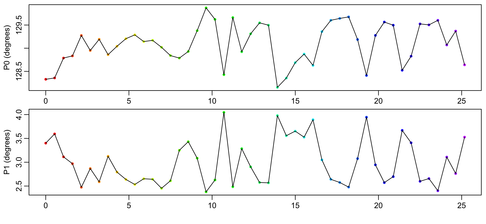
Figure 1: Automated optimization of zero- and first-order phases. The red to purple color scheme is used in all figures to indicate the data acquisition time.
Solvent signals are removed using an inverted Gaussian function with standard deviation of 0.5 ppm as shown in Figure 2. This results in attenuation of signals within approximately 1 ppm of the solvent. The filter is applied to all spectra equally, minimizing potential impact on quantitative analysis.
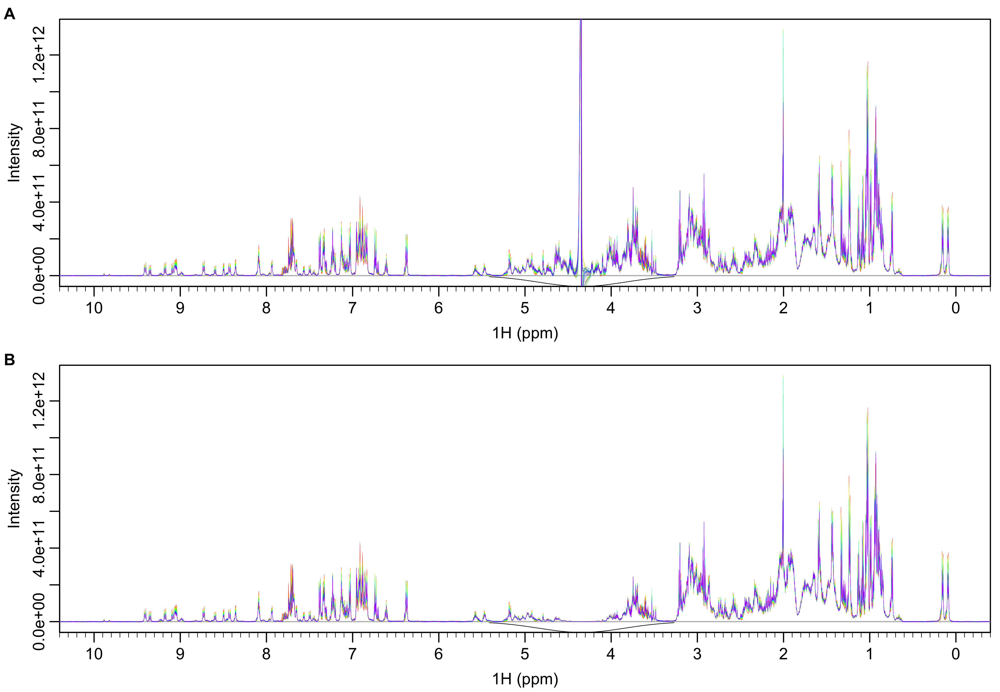
Figure 2: Spectra before (A) and after (B) solvent removal with Gaussian filter (black line).
After removal of solvent, the spectra are inverse Fourier transformed back into FIDs shown in Figure 3B.
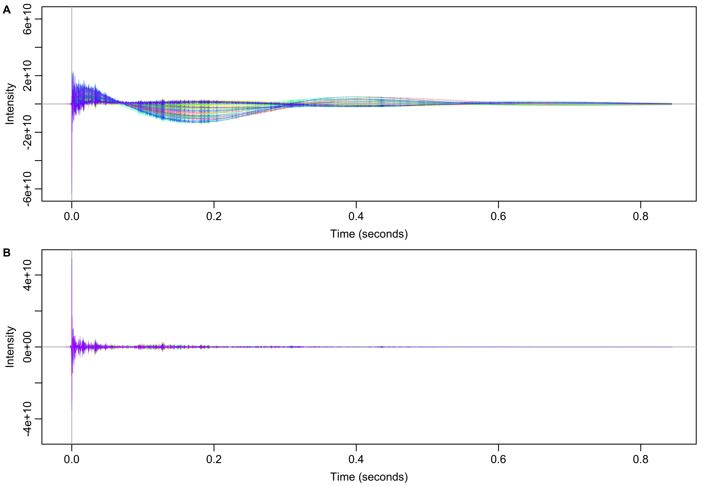
Figure 3: Time domain data before (A) and after (B) solvent filtering in the frequency domain.
To visualize shifts in field homogeneity and frequency over the experiment time course, the ratio of each FID to the first FID is calculated. This ratio has both real and imaginary components. The real and imaginary components of those those ratios are then separately smoothed with Locally Estimated Scatterplot Smoothing (LOESS) using polynomial regression spanning 5% of the points. The smoothed ratios for both components are shown in Figure 4.
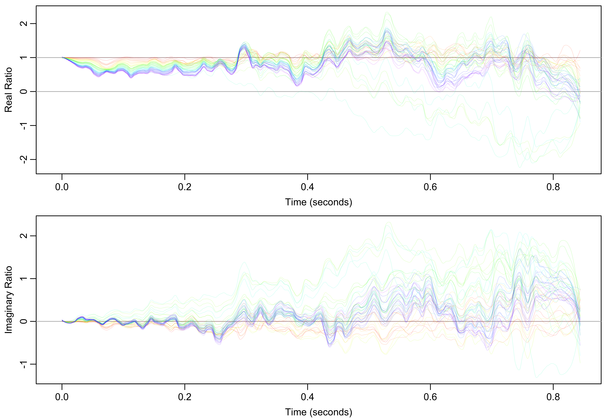
Figure 4: Smoothed ratios of every FID to the first FID. Real ratios indicate line broadening and imaginary ratios indicate frequency shifts relative to the first spectrum.
For the real component, a ratio less than one indicates line broadening, likely due to a decrease in field homogeneity. For the imaginary component, a ratio that starts at zero but linearly increases or decreases indicates a frequency shift, which is especially apparent in the middle of the time course (green and teal). Though appearing large, ratios in the second half of the FIDs are less significant because the FID signal (Figure 3B) has largely decayed by that point. The broadening and frequency shifts can be visualized more directly by applying a cosine-squared window function to those ratios and Fourier transforming them into the frequency domain as shown in Figure 5.
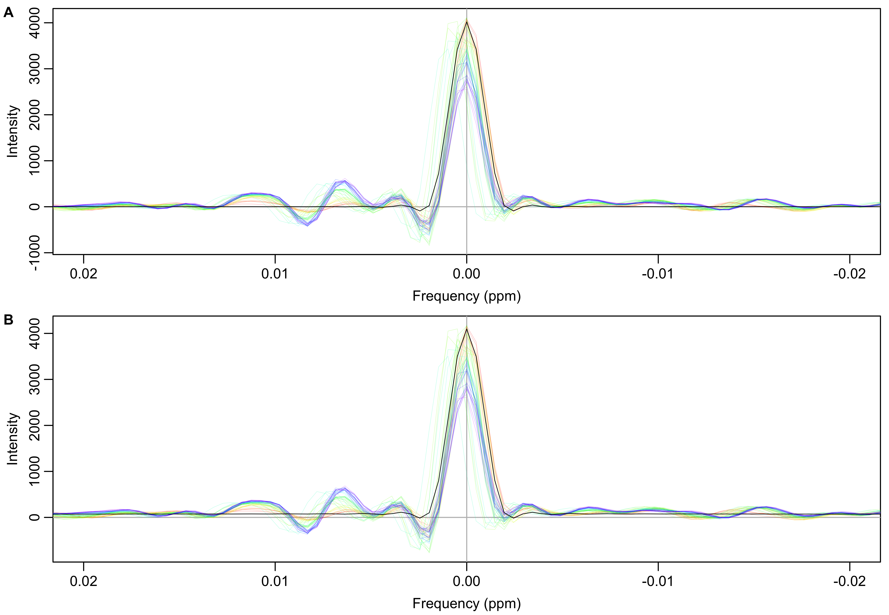
Figure 5: Smoothed (A) and original (B) FID ratios (individual/first) transformed into the frequency domain. The expected result for no deviation from the first spectrum is indicated by the black line. It is just the Fourier transform of the cosine-squared window function.
To compensate for the differential broadening and frequency shifts between spectra, an average FID is first calculated as a reference for all other FIDs. For each FID, a transform is then calculated that normalizes its intensity envelope and frequencies to match the average reference FID. The numerical values for that transform come from the ratio of the mean FID to the given FID. (Note that when the first FID was used as reference for visualization above, it was in the denominator of the ratio. Here, the reference average FID is now in the numerator of the ratio.) The resulting LOESS smoothed ratios are shown in Figure 6.
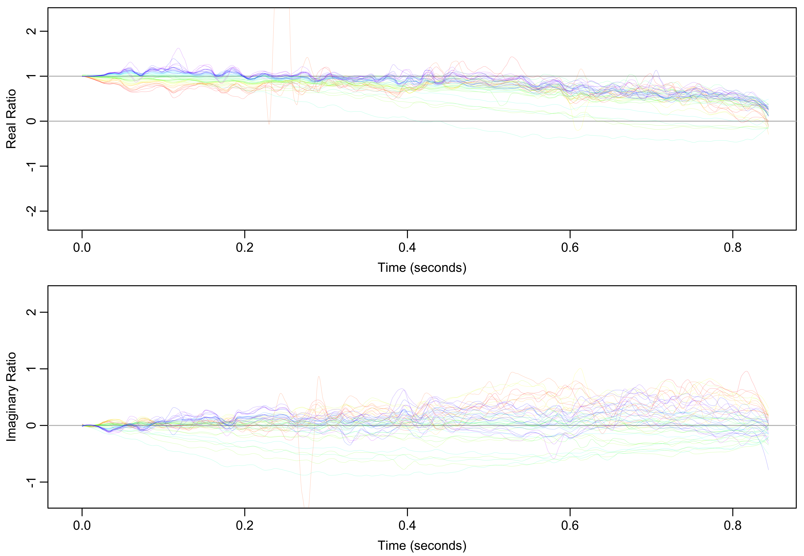
Figure 6: Smoothed ratio of mean FID intensities to each experimental FID.
The mean/individual FID ratios shown in Figure 6 are used as filters normalize the FID envelopes. The effect of normalization on each spectrum can be visualized by applying a cosine-squared window function and Fourier transforming each ratio as shown in Figure 7. High frequency components of the the ratios have been removed by multiplying the frequency domain ratios by a Gaussian function centered at zero frequency. The earliest spectra (red) are broadened and have artifacts added. The middle spectra (green) are shifted to the right to compensate for their leftward shift shown in Figure 5.
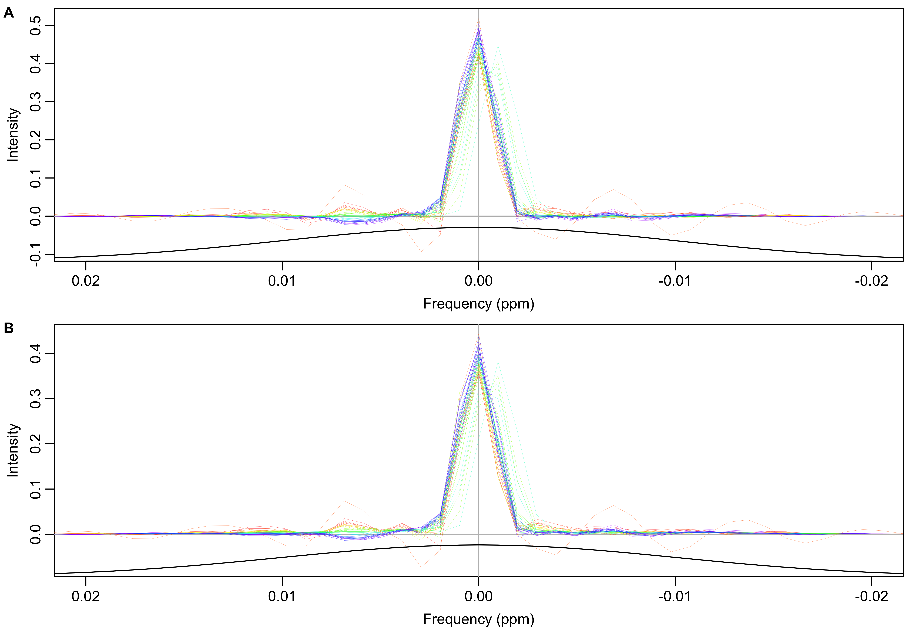
Figure 7: Smoothed (A) and original (B) FID ratios (mean/individual) transformed into the frequency domain. High frequency components of ratios have been suppressed by multiplying a Gaussian function with standard deviation of 0.01 ppm (black line).
The original FID data is filtered by multiplying the inverse Fourier transform of the smoothed frequency domain filters shown in Figure 7A. (Due to multiplication by the Gaussian, the nearly identical unsmoothed ratios in shown in Figure 7B could have also been used.) Because a cosine-squared window function has already been applied to the filter for visualization, no additional window function is used.
As shown in Figure 8A, the experiment-specific filters correct frequency shifts of -0.0011 to 0.00051 ppm. Relative to the first spectrum, the total spectrum intensities are up to 0.86% higher or 3.3% lower. (Figure 8B) As a last step in the data preprocessing, the intensities of each spectrum are normalized to compensate for the variation in total intensity.
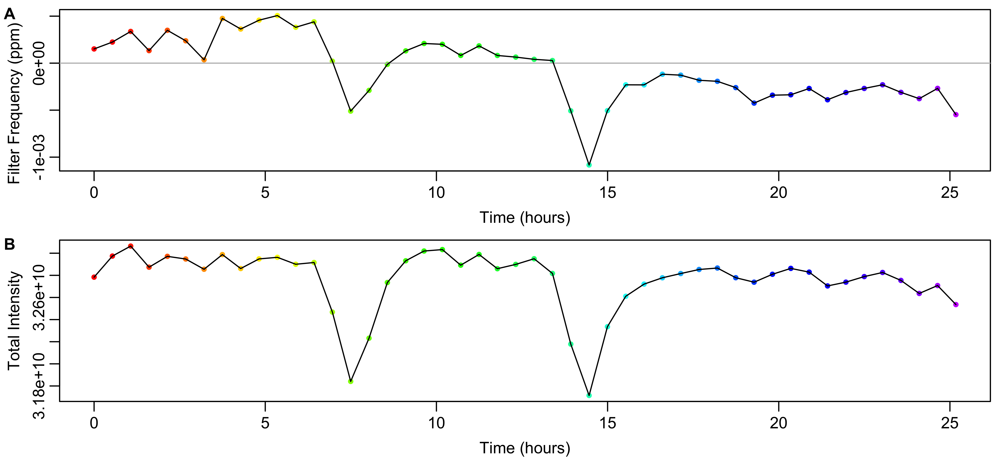
Figure 8: Data from the calculated FID filter. A) Frequency shift induced by the filter calculated from the weighted mean frequency in Figure 7A. B) Variation in the total intensity of the spectrum after applying the filter.
A representative portion of the unfiltered and filtered spectra are shown in Figure 9. The unfiltered data show different amounts of line broadening and frequency shifts that are largely removed in the filtered spectra. For instance, the peak at 3.2 ppm shows frequency shifts in the unfiltered data that go away upon filtering. The unfiltered frequency shifts obscure the appearance of right shoulders (that eventually surpass the initial intensity) on the set of three peaks around 2.94-2.90 ppm that is much clearer in the filtered spectra.
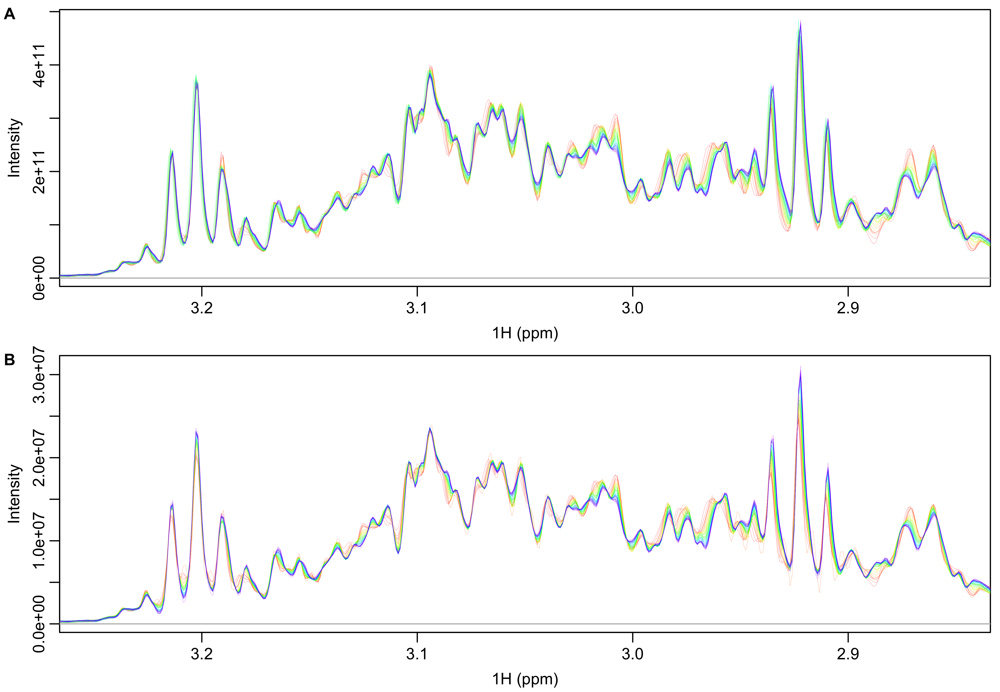
Figure 9: Spectra before (A) and after (B) filtering with smoothed FID ratios (mean/individual). Both sets of spectra have had total intensity normalization applied.
Spectral regions can be excluded by creating a 2 x N matrix with pairs of ppm values between which data will be excluded from fitting. The excluded regions are shown in Figure 10.
# consecutive pairs of numbers give starting and stopping ppm values to exclude
exclude_ppm <- matrix(c(12.4, 10, 0, -3.7), nrow=2)
exclude_ppm## [,1] [,2]
## [1,] 12.4 0.0
## [2,] 10.0 -3.7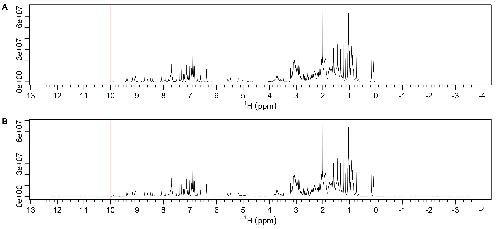
Figure 10: Spectral regions excluded from fitting. Excluded regions are shown in gray between the boundaries shown in red. The y-axis limits are determined by either the whole spectrum (A) or just the non-excluded regions (B). In this case both limits are the same.
The entire spectral time series is then fit to a two-state model with each spectrum consisting of a linear combination of two spectra whose intensities are also simultaneously fit. After that two-state fit, the population A components of each spectrum are fit to an exponential decay. This is shown in Figure 11.
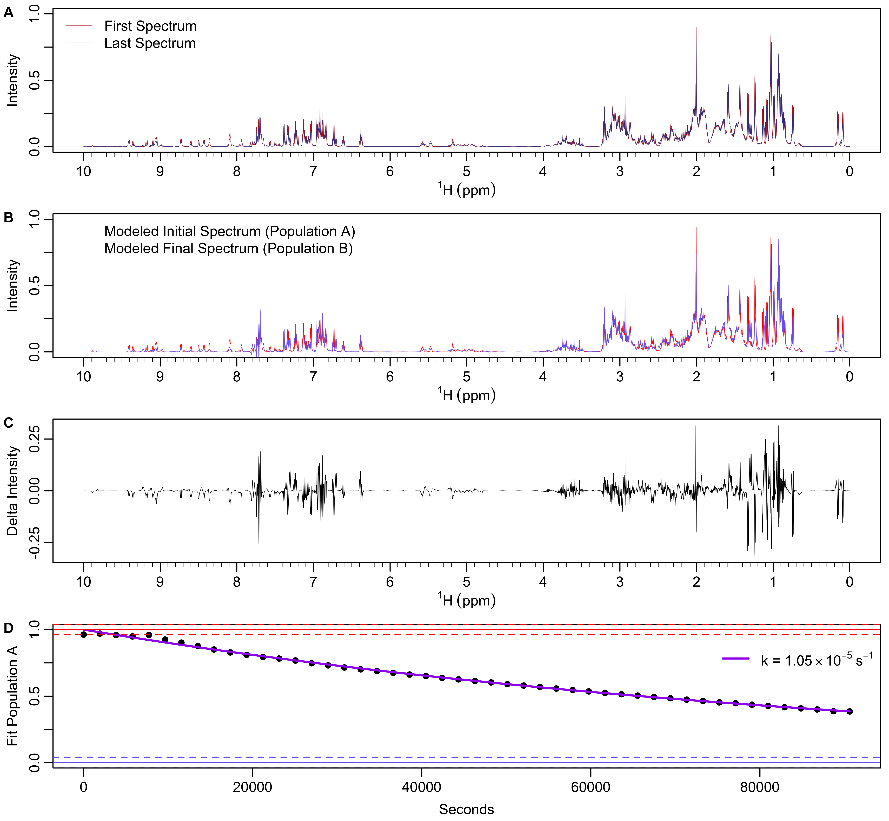
Figure 11: NMR spectra time series fit to a two-state model and then exponential decay. A) First and last spectra in the time series. B) Modeled initial and final spectra. C) Differences in intensity between the modeled initial and final spectra. D) Expoenential fit to the population A component of the two-state fit.